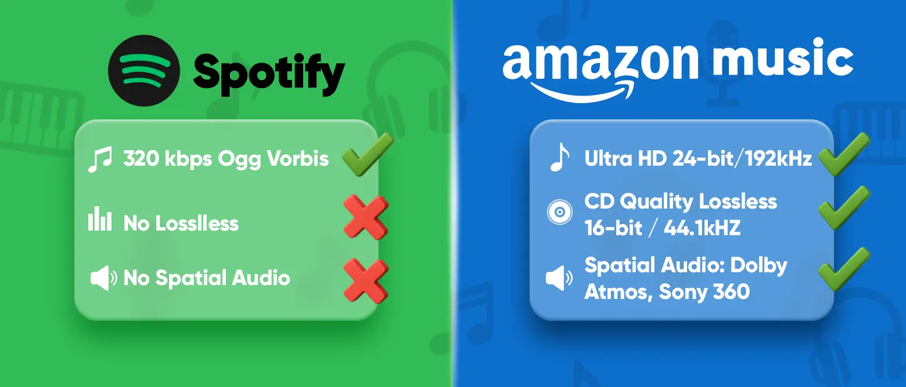

Spotify 与 Amazon Music：2025 年你应该选择哪一个？

随着流媒体音乐市场的成熟，用户的选择也日益多样化。月活跃用户超过6亿的Spotify ，凭借个性化推荐和社交功能广受认可；亚马逊音乐则凭借高品质音质和强大的生态系统整合迅速崛起。
在两者之间进行选择时，音响发烧友注重音质，社交用户注重分享，而注重价格的听众则寻求价格与功能的最佳平衡。这两个平台都声称自己拥有独特的优势，但哪一个真正符合你的需求呢？
作为这两款产品十多年的付费用户，我将从
Spotify 与 Amazon Music 对比
简单来说，两个平台提供的库和核心功能类似，但定位不同，导致用户偏好也不同。
Spotify 的吸引力在于其
亚马逊音乐更注重
免费版本提供哪些功能？
两个平台的免费套餐都有限制：广告、压缩音质、不支持离线播放。关键区别在于用户体验。
Spotify 免费版允许按需访问完整音乐库，但跳过功能有限。相比之下，Amazon Music 免费版的音乐库规模较小，主要集中在播放列表和电台式随机播放，且广告更频繁。
哪种高级订阅更值得？
2025年，两个平台都提高了价格：Amazon Music Unlimited在1月份从10.99美元涨至11.99美元/月，Spotify在8月份也跟进，也调整为
两者的最新订阅价格如下：
| 计划类型 | 亚马逊音乐 | Spotify | 奈飞小铺 Spotify Premium |
|---|---|---|---|
| 个人（Prime） | 每月 10.99 美元 | – | 每月 18.25 元 |
| 个人（非 Prime） | 每月 11.99 美元 | 每月 11.99 美元 | – |
| 家庭 | 每月 19.99 美元 | 每月 19.99 美元 | – |
| 学生 | 每月 5.99 美元 | 每月 5.99 美元 | – |
| Duo | – | 每月 16.99 美元 | – |
| Echo | 每月 4.99 美元 | – | – |
总体而言，两者的官方定价几乎相同。Spotify 还提供了
另一方面，亚马逊音乐凭借
音质：谁最胜一筹？
亚马逊音乐在音质方面领先
如果你是那种为了获得更好的音质而升级设备的人，并且注重鼓点的清脆和人声的层次感，那么 Amazon Music Unlimited 非常适合你。
自 2021 年起，该平台已将之前额外收费的高分辨率音频捆绑到标准订阅中，让所有用户都可以访问：
CD 品质无损音频 ：16 位/44.1 kHz FLAC，约 850 kbps超高清高分辨率 ：高达 24 位/192 kHz，高达 3730 kbps空间音频支持 ：完全兼容杜比全景声 (Dolby Atmos) 和索尼 360 Reality Audio
在兼容设备上，这些技术可提供更加立体的声场，为注重细节的听众带来明显的改善。
也就是说，要充分体验高分辨率音频，你需要合适的设备。使用蓝牙连接或入门级设备时，播放速度通常会回落到 320 kbps 标准。
Spotify 仍然坚持使用有损格式
Spotify 在音频质量方面存在明显的弱点。截至 2025 年 9 月，其最高设置仍为
虽然 320 kbps 的音质足以满足日常使用（例如，在配备标准耳机的手机上），但由于竞争对手纷纷推出无损音质，Spotify 在高端音频体验方面已落后。我在Apple Music 与 Spotify 的对比中进一步阐述了这一差距。
我们的真实世界测试
为了让你更清楚地了解情况，我们在安静的环境中对
在
相比之下，
话虽如此，如果你使用的是普通的蓝牙耳机或手机内置扬声器，这些差异几乎难以区分。真正的音频改进需要整个播放链——从音源到设备——都达到标准。
音乐库：谁有更多选择？
文库大小几乎相同
Spotify 和 Amazon Music 都声称提供超过 1 亿首曲目，涵盖全球主流唱片公司和独立音乐人。对于大多数用户来说，热门歌曲的可获得性几乎没有差异，独家优惠也越来越少见。
例如，曾经是亚马逊音乐独家发行的《Look at Us Now (Honeycomb)》很快也在 Spotify 上全面上线。总的来说，曲库规模并不是这两个平台之间的核心区别。
Spotify 在播客领域表现出色
Spotify 在播客领域拥有明显优势。该平台目前拥有约 700 万个节目，并获得了
相比之下，亚马逊音乐虽然收购了
亚马逊音乐在有声读物领域领先
借助母公司 Audible，亚马逊音乐在有声读物领域拥有天然优势。Amazon Music Unlimited 订阅用户
然而，Spotify Premium 用户
Spotify 与 Amazon Music：用户体验
Spotify 提供更广泛的设备覆盖范围
在兼容性方面，Spotify 凭借强大的跨平台适应性占据明显优势。通过
从 智能手表（Apple Watch、Wear OS）到 游戏机（PlayStation、Xbox）、智能电视、车载系统以及各种 Hi-Fi 扬声器，Spotify 几乎涵盖了所有内容，确保了流畅的聆听体验。
亚马逊音乐在智能家居集成方面表现出色
亚马逊音乐在整体设备覆盖率上或许比不上Spotify，但它在特定场景下却大放异彩。作为
用户不仅可以通过语音点歌，还可以发出上下文命令，例如"播放晚餐音乐"、设置睡眠定时器，或在多个房间同步播放。对于那些在亚马逊生态系统中投入大量资金的人来说，这种无缝的便利是无可替代的。
Spotify：直观的视觉设计
Spotify 的界面强调
在播放屏幕上，大尺寸的专辑封面和精简的控制按钮让用户专注于音乐本身，而不是分散注意力的选项。
亚马逊音乐：信息丰富的界面
Amazon Music 的界面感觉更像是一个功能面板，主屏幕不仅提供了推荐的播放列表，还清晰地显示
播放界面自适应专辑配色，并集成了
Spotify 与 Amazon Music：功能比较
Spotify 提供更精准的个性化服务
Spotify 在个性化推荐方面几乎无人能及。它依靠协同过滤、内容分析和神经网络，不断从用户的日常行为中学习。
相比之下，亚马逊音乐的推荐功能明显弱一些，主要依赖
虽然
亚马逊音乐生态系统整合能力增强
得益于
购物功能让用户在收听音乐的同时，可以直接在应用内浏览和购买艺术家周边商品，例如官方T恤或黑胶唱片。该平台还提供
相比之下，Spotify作为独立的音乐平台，虽然支持多设备播放，但无法提供同等水平的硬件和电商整合。亚马逊音乐则将音乐、购物和智能家居体验融为一体，为用户提供更便捷的一体化服务。
每个平台的独特功能
两个平台都提供了独特的附加功能。虽然这些细节并非决定性因素，但它们往往会对某些用户产生额外的吸引力：
车载模式 ：移动应用程序中的简化界面，具有更大的控制和语音集成，可以更轻松地管理驾驶时的播放。购买和本地导入 ：用户可以购买数字音乐并将其导入亚马逊音乐库进行本地播放，但尚不支持云库匹配。播客"主题"标签 ：播客中添加人工智能和人工生成的标签，方便用户直接跳转至相关剧集。此功能目前已在部分 iOS 和 Android 热门播客上推出。
Spotify Wrapped ：每年年底的年度回顾，总结最受欢迎的歌曲、艺术家和收听习惯，并与全球数据进行比较——在社交媒体分享中非常受欢迎。嵌入共享 ：为创作者提供嵌入代码，以视觉上吸引人的格式将专辑或播放列表无缝集成到网站和博客中。音乐会和新发行发现 ：根据用户偏好生成附近音乐会的播放列表，并创建即将发布的中心，以帮助用户提前发现新音乐。
Spotify 与 Amazon Music：比较总结
经过七个维度的深入分析，我在对比表格中总结了最终结果，以帮助你做出决定：
| 类别 | Spotify | 亚马逊音乐 |
|---|---|---|
| 成本 | ✅ 通过 环球巴士 订阅更划算 | ❌ 除 Prime 折扣外价格更高 |
| 音质 | ❌ 仅 320 kbps，无 HiFi | ✅ 提供无损高清/超高清 |
| 图书馆和内容 | ✅ 700 万个播客节目 | ✅ 每月一本免费有声读物 |
| 设备兼容性 | ✅ 最广泛的跨平台支持 | ❌ 覆盖范围有限，但与 Echo 集成良好 |
| 界面设计 | ✅ 现代、简单、直观 | ✅ 信息丰富，功能专业 |
| 个性化推荐 | ✅ 精准的算法 | ❌ 保守，缺乏深度探索 |
| 生态系统整合 | ❌ 独立平台，集成有限 | ✅ 集成音乐购物和现场表演 |
通过比较我们可以看出：
- Spotify的优势集中在
软件方面 ，个性化推荐更精准，跨平台兼容性更高，并且可以通过 环球巴士 以更低的价格订阅。 - 亚马逊音乐在
硬件和生态系统 方面 更具竞争力——高质量的音频和与亚马逊生态系统的深度融合是其核心优势。
Spotify 还是 Amazon Music？
经过详细对比，整体来看，Amazon Music 更适合对音质要求较高、大量使用 Alexa 生态系统的用户，而 Spotify 则更适合注重音乐发现、播客内容、跨平台体验的用户。
不过从整体体验和性价比来看，Spotify 更值得推荐，它不仅在推荐算法、播客资源、设备兼容性等方面有着明显的优势，而且通过奈飞小铺只需 18.25 元/月即可订阅（年付 219元），享受与官方套餐完全相同的服务。
常问问题
亚马逊音乐有哪些缺点？
亚马逊音乐的社交功能有限，播客和独家内容较少，推荐内容也较为保守，对音乐探索爱好者缺乏吸引力。一些新功能（例如 AI Maestro）受到地区限制，在非亚马逊设备上的性能也不佳。
与 Spotify 相比，有多少人使用 Amazon Music？
截至2024年底，Spotify月活跃用户约6.26亿，其中付费用户2.46亿，继续保持全球领先地位。相比之下，亚马逊音乐的用户约为8000万，其中大部分（约5250万）集中在美国。
亚马逊音乐比 Spotify 好吗？
如果你注重个性化推荐、界面体验和播客内容，Spotify 更适合你。如果你追求无损音频、空间音频（超高清、杜比全景声），并且大量使用 Alexa 或 Echo 设备，那么 Amazon Music 会更有优势。